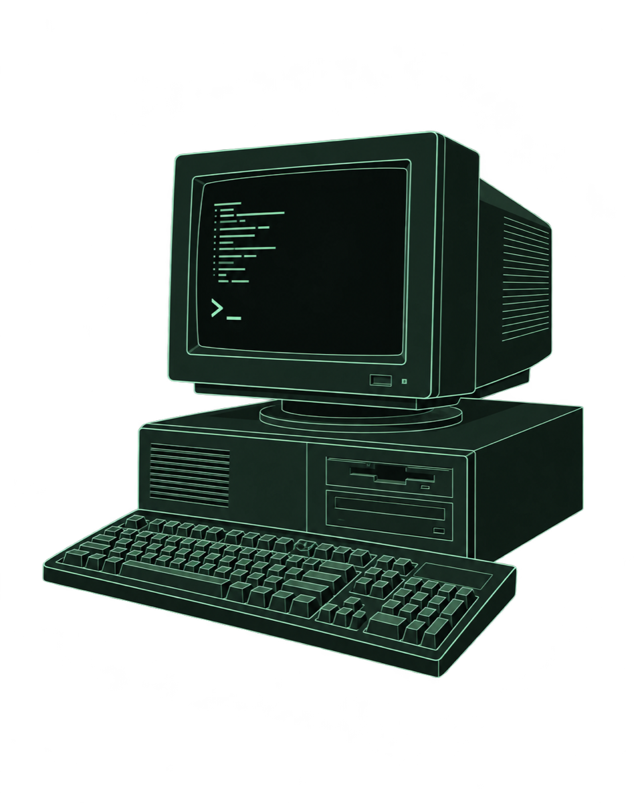

Engenheiro de computação
RafaelFernandes
> hello, friend
Software, automação e vida real.

Família, trabalho e o que me move
Sobre mim
Sou Rafael Fernandes, tenho uma esposa maravilhosa, uma filha linda e um cachorro sapeca que completa a nossa família. Também sou engenheiro de computação, com especialização em Inteligência Artificial pela Escola Politécnica da USP. Há 20 anos, trabalho com desenvolvimento de sistemas e projetos que conectam software e automação industrial.
Fora do trabalho, busco uma vida saudável, praticando exercícios e cuidando da alimentação. Sou faixa branca em jiu-jítsu e também pratico musculação, ciclismo, natação e um pouco de corrida. E gosto muito de jogar videogame.
Meu primeiro contato com programação aconteceu no curso técnico, com o microprocessador Z80 e a linguagem Assembly. Escrevia mnemônicos no caderno e digitava código de máquina em hexadecimal diretamente na memória. A montagem era no lápis e na borracha.
Na faculdade, comecei a estudar programação em linguagens de alto nível e, pouco depois, entrei na área de qualidade e testes de software. A partir dessa época, meus estudos e trabalhos passaram por microcontroladores PIC e Arduino, C, C++ e C#. Com muito estudo, ampliei minha atuação para programação de PLCs, sistemas SCADA, integrações com MES e ERP e computação em nuvem.
Criei este espaço para compartilhar conhecimentos, documentar projetos e trocar experiências sobre eletrônica, automação, software e inteligência artificial. Quero contribuir com quem está começando ou evoluindo na carreira, aproximando o que estudamos dos desafios que encontramos na prática.
Por aqui, também compartilho histórias da minha trajetória e experiências com tecnologia e dados aplicados ao esporte e à vida cotidiana.
Temas que vão aparecer por aqui
Um espaço em construção, um assunto de cada vez.
- Eletrônica e embarcados
- Automação industrial
- Automação residencial
- Software
- Dados e IA
- Carreira
- Esporte e tecnologia